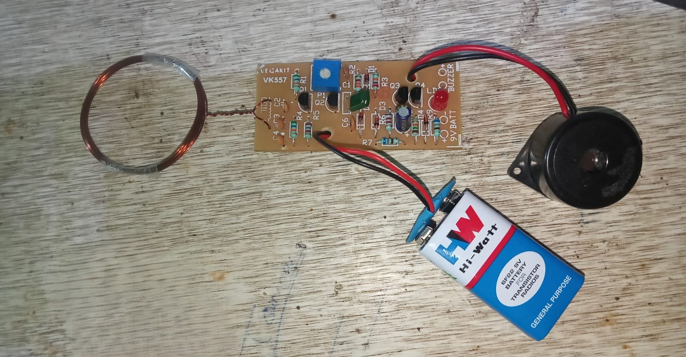
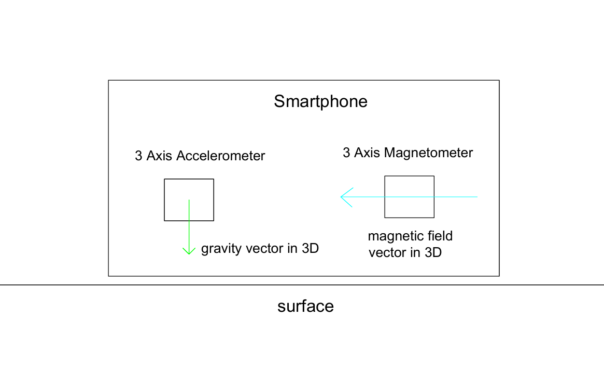
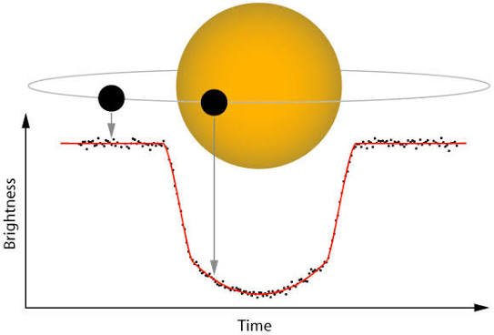

Nitin Vishwakarma
home
projects
theoretical projects
contact
Projects
GitHub:
https://github.com/Nitin0098/Projects
Land Subsidence & Landslide Early Warning System
explore more
→
Smart WiFi Power Extension Board
explore more
→
Robosoccer Bot
explore more
→
DIY Smartphone Microscope
explore more
→

Beat Frequency Oscillator (BFO) Metal Detector
explore more
→
Autonomous Pathfinder Robot
explore more
→

Smartphone Inclinometer & Digital Level
explore more
→

Exoplanet Finder: Box Least Squares Transit Detection
explore more
→
dont click this